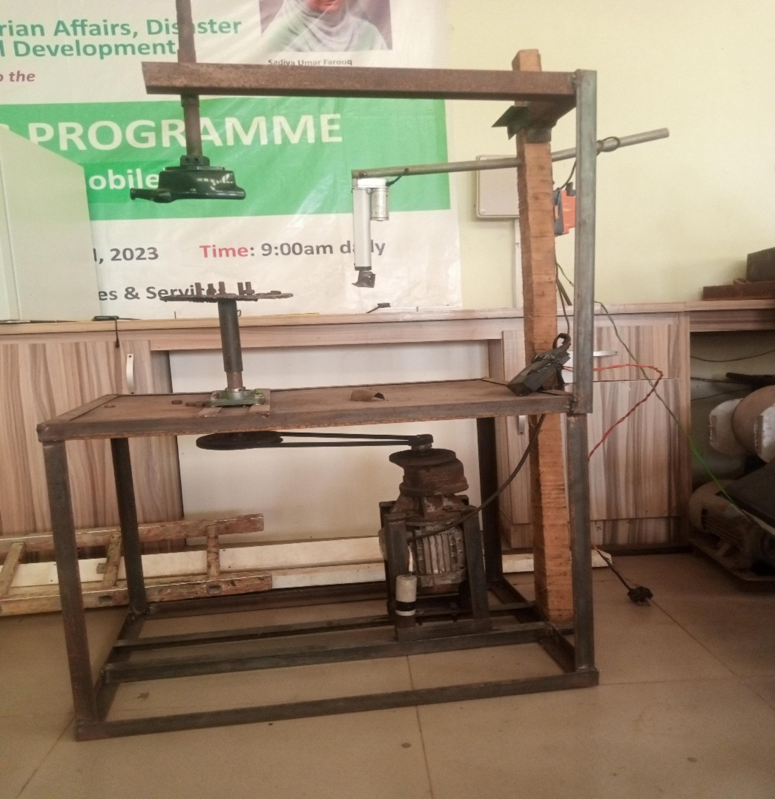

MACHINE DESIGN / BUILD
Tyre Debeading Machine
Separating a tyre bead by hand is slow, and it is hard on the person doing it. I designed, fabricated and then modified a powered debeading machine — reworking the frame for rigidity under load and repositioning the controls so the operator isn't fighting the machine to use it. Faster bead separation, less downtime, and a job that stops being punishing.
FabricationWelded FrameMachine DesignErgonomics